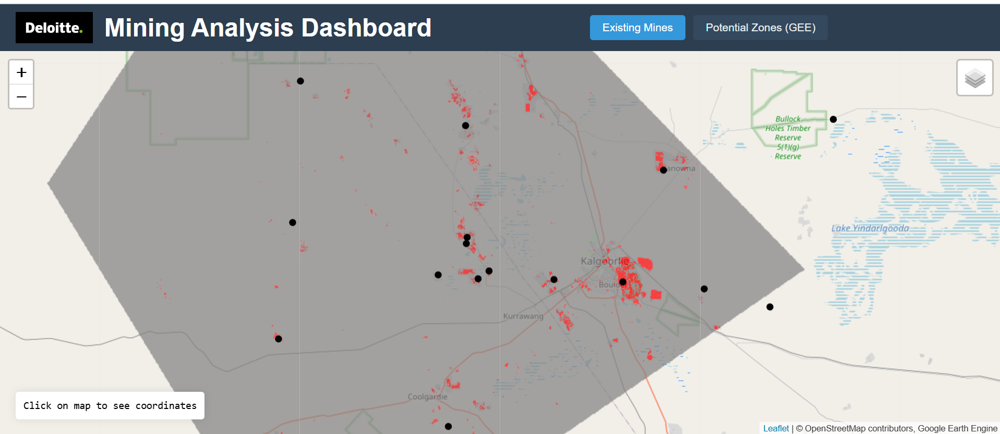
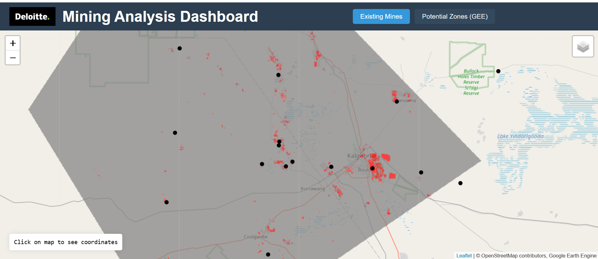

Our Solutions
EUDR Helper empowers Deloitte practitioners and clientele to confidently navigate EU deforestation regulations through satellite-derived insights and structured guidance. The tool features a global monitoring system that analyzes forest cover changes since 2021, delivering precise measurements through both user-drawn areas and coordinate inputs. Users can examine detailed satellite imagery in multiple viewing modes to verify land use changes over time. To streamline compliance processes, our integrated AI assistant provides expert guidance on policy requirements and technical specifications, helping users efficiently manage their due diligence obligations. This comprehensive solution transforms complex regulatory requirements into actionable insights, enabling businesses to maintain sustainable supply chains while meeting the new EU anti-deforestation requirements.
Mining Analysis Dashboard
- Built an automated system that detects and monitors active mining operations while tracking their environmental impact, powered by ML models trained on Geoscience Australia's verified mining data.
- Created a predictive engine that uses ML to identify potential mineral-rich zones by analyzing spectral indices from multi-source satellite imagery, terrain characteristics, geological data, and geophysical variables like total magnetic intensity.
 
